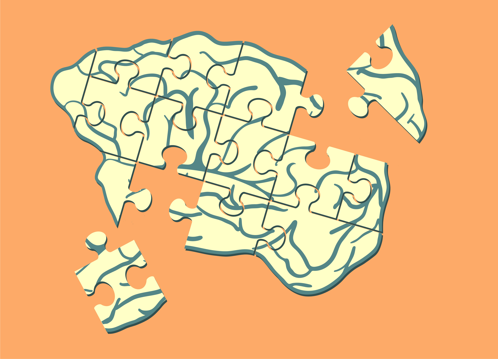

timeline: six weeks
role: studio assistant
employment: Northwestern Segal Design Institute
skills: Adobe Illustrator, conceptual illustration
I worked as a studio assistant at Northwestern's Segal Design Institute this summer, and one of my responsibilities in this role was assisting my professor with creating a design blog. Here are a few illustrations I made for her blog posts, all made with Adobe Illustrator.
